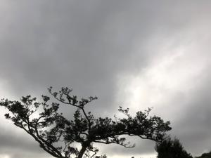
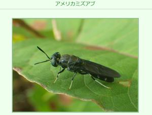
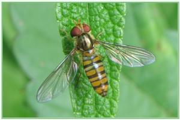
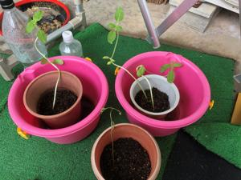

うるがいの話 ある日
最新: 虫が嫌いな人【うるがいの話 ある日】とは 一日だけのプログです
『うるがいの話』の最新一日だけのプログで、通信料が少なく経済的だ。カニの画像をクリックすると全ての日付が載る『うるがいの話』サイトを表示します
|
|
【うるがいの話】 うるがい(ｳﾙｶﾞｲ urugai)とは、『もずくがに』の名前でとても大きくなります。 |
|---|---|
|
|
【カミマヤーの話】 猫のことを方言でマヤーといいます。カミマヤー（kamimayaa）とは、神の猫のことです。 |
|
【たながぁの音楽】 たながぁ（ﾀﾅｶﾞｰ tanagaa）とは手長えびのことで、何種類かあり大きいのは車 エビぐらいになります。 |

|
【ぶながぁの話】 ぶながぁ(ﾌﾞﾅｶﾞｰ bunagaa)とは、赤い髪の毛、赤い身体、そして身長は１ｍ２０ｃｍ ぐらい、川の蟹を食べているの目撃された。場所は沖縄県国頭郡大宜味村のと ある村僕の隣近所に住んでいる爺さんから、聞いた話です。 |
|
|
【ギーマの話】 ギーマ(giima)とは、山原の里山に咲くスズランに似た、 花を付けます。実は食べられます、 気が付くと口の周りが紫になっています。 |
2022年06月02日 (木）虫が嫌いな人
15:57
   
ヨメである。昨日の昼、台所から『ギャー、汚い、殺して！』と叫ぶ。フムフ
ムまたか、ゴキブリかと現場に行く。２匹が、ウロウロしている。蜂のような
ものは手づかみは危険なので虫取り網で、黒い蠅見たいな大きいものは小さい
頃からの遊んでいる昆虫なので手づかみで外に逃す。虫が嫌いな人には困った
もんだ。さすがに名前までは知らないのでネットで雰囲気が近いものを捜す。
養老 孟司の私の脳はなぜ虫が好きか？より引用
家族で山の中をドライブしたりすると、それがよくわかる。「ちょっと車を止
めてよ」というのが、いちばんよくある手である。虫がいそうだとなると、ど
うしても車を降りて調べたくなる。止めたほうは、まさしく「ちょっと」だろ
うと思っている。それが３０分経っても、１時間経っても、はては２時間にな
っても、戻ってこない。家族旅行では、ほとんどの虫屋は、こうして奥さんに
叱られた覚えがあるはずである。叱られるくらいなら、まだいい。たいていは
家族に見放されている。ある女優さんと話をしていたら、彼女が「私は新婚旅
行で台湾に行ったけど、旦那に置いて行かれた」と、言っていた。置いていっ
た旦那のほうは、チョウを採りに行ってしまったのである。もっともこの女優
さんとは、樹木希林さんである。（１９９９年８月）
ということは、あのこわもての内田裕也さんである。んー、なんかすごい。二
人とも既に亡くなってしまったが。おっと、忘れるところだった、毎度カタツ
ムリの被害にあっているので、ベランダでヒマワリとコスモスを育てていたら
コスモスにカタツムリが・・・・、やられてしもうた。少し、葉が残っている
ので、どこまで持つか試してみよう。一応ヒマワリは大丈夫だが、なにかモヤ
シみたいにひ弱な感じに育っている。因みにカタツムリは貝の仲間である。
１５時４３分 ビットコインの総資産 ￥１１、２１２↓